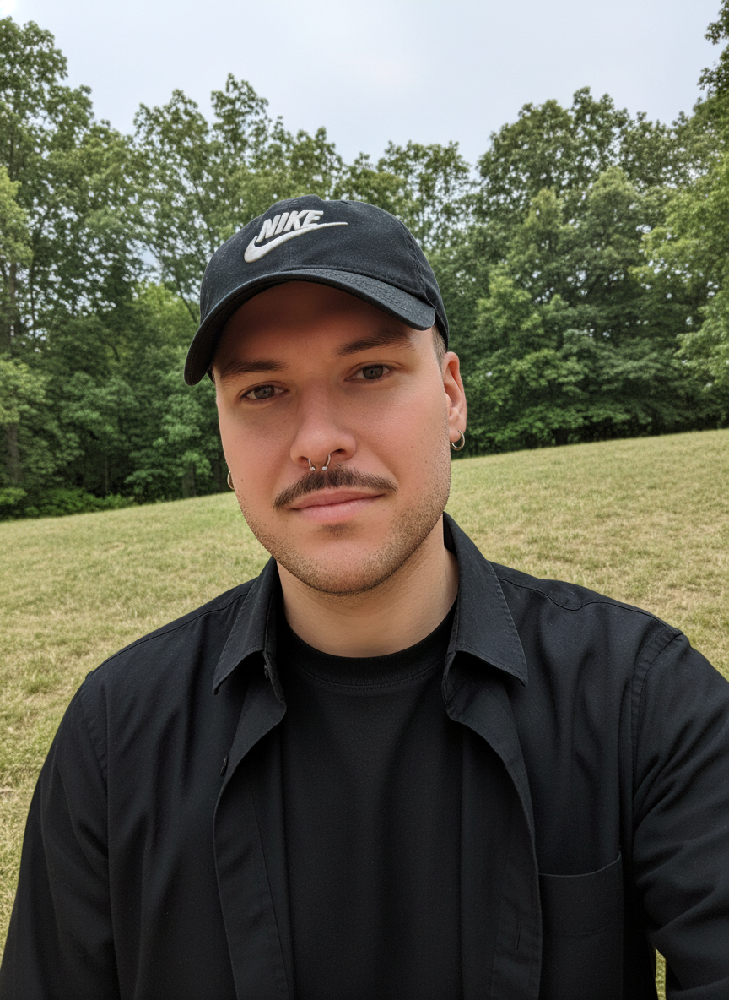

Who made this?
I'm Hugo Thomas, a French filmmaker and developer. My first feature film, Willy 1er, premiered at Cannes. My second, Juniors, screened at festivals worldwide. Both are on Netflix.
Along the way, I started building tools for writers and creatives — things I wished existed. Screenplay Editor was the first. Then Novel Editor. Then Thesis Editor.
Why Thesis Editor?
I watched friends and colleagues struggle with their dissertations — fighting Word formatting, losing track of key terms, juggling between writing and organizing. Academic writing is hard enough without the tooling getting in the way.
Thesis Editor lives inside Google Docs — no new software to learn, no files to migrate. Format your thesis with one click, manage your glossary from the sidebar, navigate sections instantly, and stay focused with a built-in timer. Simple tools for a monumental task.
Contact me